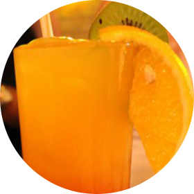
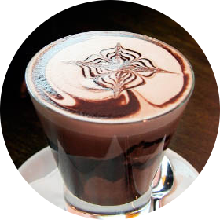
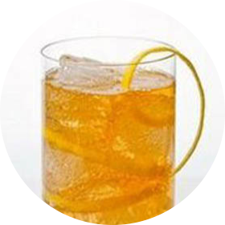
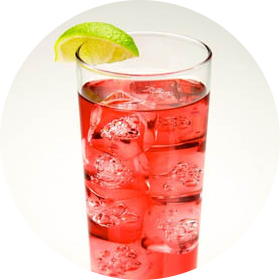

Apple Cider Soda
Limão e gengibre

Virgin on the Beach
Batida de morango

Choconhaque

Savoy Corpse Reviver
Horse’s Neck
Sidecar
Silent Siren
Corpse Reviver
Vesper
Dry Martini
Woo Woo

Cape Cod
Kamikaze
Sex On The Beach
Sem álcool
Conhaque
Gim
VodKa